MAP: New York City’s controversial statues and monuments
Published September 8
With Mayor de Blasio naming a committee to examine how New York City should deal with the dozens of statues, obelisks and memorials commemorating historical figures, a Daily News review of NYC’s statue list found an astounding cast of characters whose heroism masks bloody exploits, racist views and corrupt behavior. Browse the list of statues and the history of who those statues commemorate below.
New York City Statues
-
Bernard Baruch
Prominent New York financier and advisor to Presidents Woodrow Wilson during World War I and Franklin Delano Roosevelt during World War II
Born 1870 in South Carolina, in 1925 he endowed a scholarship named in honor of his mother with the United Daughters of the Confederacy (UDC), a group dedicated to “honor the memory of those who served and those who fell in the service of the Confederate States.” The funds were to support “scholars who have written unpublished monographs for full-length books on Confederate history.”
-
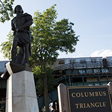
Christopher Columbus
Italian 15th Century explorer heralded for “discovering” America
One of the first European explorers to reach North America, landing in Hispaniola (Now Haiti/Dominican Republic) in 1492. He immediately claimed the new world as the possession of the king and queen of Spain and began capturing and enslaving the indigenous tribes already living in what would later be called America. The plaque in Queens, marred by grafitti stating “Don’t Honor Genocide” Aug. 30, 2017, states “But for Columbus There Would Be No America.”
-
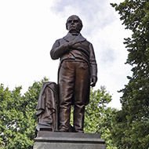
Daniel Webster
19th Century Senator known for his soaring oratory
Daniel Webster strongly opposed Southern secession and thus was a key supporter of the Compromise of 1850. This allowed new states such as California to enter the union as free states, but ratified the Fugitive Slave Act of 1850 requiring federal authorities to aggressively pursue escaped slaves and return them to their Southern masters. This act outraged abolitionists fighting to end slavery.
-
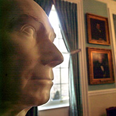
Henry Clay
19th Century U.S. Senator also known for his eloquence on the floor of the Senate
Henry Clay authored the Compromise of 1850 that allowed new states that resulted in the much-reviled Fugitive Slave Act requiring federal authorities to aggressively pursue escaped slaves and return them to their Southern masters.
-
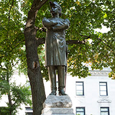
General Daniel Butterfield
Civil War general who won a Medal of Honor after being wounded at Gaines Mill who was later appointed assistant treasurer by President Ulysses Grant
General Daniel Butterfield resigned after he was caught in scheme by Jay Gould and James Fisk to corner the gold market. Took a $10,000 bribe from Gould to secretly inform him when the government planned to buy or sell gold. He resigned October 1869.
-
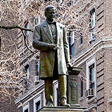
Samuel J. Tilden
New York governor and Democratic nominee for President in 1876
Samuel Tilden won the popular vote but the Electoral College was split evenly with Rutherford B. Hayes, a Republican. Both parties worked behind the scenes to sway three Southern States to throw their support to their respective candidates. Ciphered telegrams revealed Florida’s GOP governor offering to throw the election to Tilden for $200,000. The Democrats responded with a counter-offer of $50,000, adding, “Proposition too high.” Many of the telegrams were sent or received by Tilden’s personal secretary and nephew from Tilden’s New York residence. Tilden denied knowing anything about the scheming before a Congressional committee.
-
Andrew Jackson
7th U.S. President (1829-1837) and hero of the Battle of New Orleans during the War of 1812
President Andrew Jackson signed the Indian Removal Act of 1830, initiating a virulent campaign to eradicate the Native Americans who populated America before the Europeans showed up. He promised them that “as long as the grass grows green and the rivers flow” they would be left alone if they stay west of the river. He immediately reneged on his promise. He also railed against what was then the growing anti-slavery movement known as abolitionism.
-
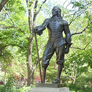
Peter Stuyvesant
Director-general of what is now New York 1647-1664
In 1654 Peter Stuyvesant wrote to the Dutch East India Company protesting the influx of Jews relocating from South America, demanding that “the deceitful race – such hateful enemies and blasphemers of the name of Christ – be not allowed to further infect and trouble this new colony.”
-
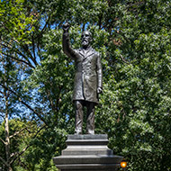
Samuel Sullivan Cox
19th Century Democratic Senator from Ohio
On Feb. 17, 1864 Samuel Cox gave a speech to Congress accusing President Abraham Lincoln (then running for reelection) of a secret plan to promote miscegenation. He waved about a pamphlet entitled “Miscegenation: A theory of the Blending of the American White Man and Negro” and produced letters from abolitionists in support of it, which Cox warned proved the pamphlet’s “disgusting theories” “which seem so novel to us (but) have been a part of the gospel of abolition for years.” The pamphlet was a hoax; Lincoln was, of course, re-elected.
-
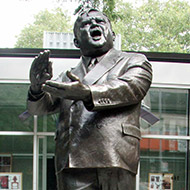
Fiorello La Guardia
Congressman 1923-1933, Republican Mayor of New York City 1934-1945
In 1943 Metropolitan Life – which had a stated policy of not renting to blacks – announced plans to build Stuyvesant Town in Manhattan. La Guardia approved the development, knowing of this discriminatory policy. He was roundly criticized by the black community and many of his usual supporters for declining to intervene. The day he signed the contract he said he hoped the courts might intervene to reverse the policy.
-
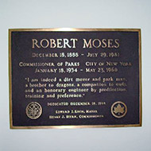
Robert Moses
Powerful New York official who as head of several authorities and the New York City Parks Department remade much of the city through massive urban development then known as “slum clearance.”
Robert Moses was hated by community groups for wiping out swaths of working class neighborhoods to erect highways and bridges. His proposal to put up an elevated highway through Soho and Little Italy was defeated in 1962 following months of protests led by community activist Jane Jacobs. There are no statues of Jacobs in NYC.
-
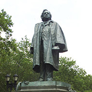
Rev. Henry Ward Beecher
Famous 19th Century abolitionist and women’s rights champion based at Brooklyn’s Plymouth Church
In the years leading up to the Civil War, Rev. Henry Beecher raised money to purchase slaves’ freedom and to send rifles (called Beecher’s Bibles) to abolishinists fighting in Kansas. After the war he supported women’s suffrage, but in 1875 he became the star of a very public adultery trial for having an affair with the wife of one of his assistants. The woman’s husband told suffragette Elizabeth Cady Stanton of the affair. Another women’s rights activist, Victoria Woodhull, who was criticized by Beecher for her advocacy of free love, made the affair public to accuse him of hypocrisy. The trial was covered nationally and described as “the most sensational he-said, she-said in American history.” The trial resulted in a hung jury.
-
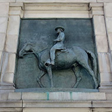
Ulysses S. Grant
Commanding General of the Union Army during the Civil War, U.S. President 1869-1877
He was the key architect of the Union’s victory over the Confederate forces during the Civil War. However, in December 1862, Gen. Grant General issued Order No. 11 which expelled all Jews from Kentucky, Tennessee and Mississippi. The allegation was that Jewish merchants were engaged in the black market sale of southern cotton in defiance of U.S. law. The order was rescinded days later by Lincoln.
-
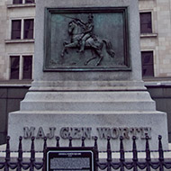
General William Jenkins Worth
Famous general of the Mexican-American War of 1846-1848
Before the Mexican-American War, General William Worth in 1841 commanded federal troops clearing Seminole Indians from Florida as part of the government’s campaign to ship all Indians from the South to west of the Mississippi. He ordered his men out on search and destroy missions which drove the Indians deeper into the swamps of Florida. Worth offered $8,000 in bribes to one chief, Coaccoochee, to convince his people to move west. Worth later ordered the Third Army to move into the Big Cypress Swamp and burn villages. By 1843 Worth declared there were only about 300 Indians living in South Florida and they were no longer a threat.
-
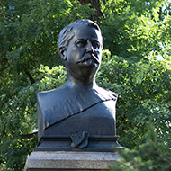
Brigadier General Winfield Scott Hancock
Famous general of the Civil War
At Gettysburg, Winfield Hancock held the hill during Pickett’s Charge, where he was badly wounded. After the war he was sent to the frontier, covering area that includes what is now Kansas, Missouri, Colorado and New Mexico. At one point as negotiations with the tribes faltered, he ordered the burning of an abandoned village. He was then reassigned to New Orleans during Reconstruction, where in November 1867 he issued General Orders, No. 40 declaring that government should quickly be returned to local (white) civilian control. This struck fear with newly-freed slaves that he was encouraging a return to antebellum south. He ended his military career in the Great Plains, where an Army expedition under his command committed a massacre against the Blackfeet Indians. In 1880 he was the Democratic candidate for president but lost to Republican James Garfield. In 1881 he was elected president of the National Rifle Association (1881), with the stated intent to make skill with weapons “as prevalent as it was during the Revolution.” He died on Governor’s Island.
-
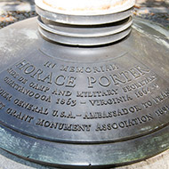
General Horace Porter
Famous Civil War General and aide-de-camp to General William Sherman during his March to the Sea
After the war, General Horace Porter became Ulysses Grant’s personal secretary and found himself ensnared in a plot by financier Jay Gould to corner the gold market. He says he warned Grant of the plot, but during a later investigation known as the Whiskey Ring trials, then Treasury Soliciter Bluford Wilson alleged that Porter was involved in the plot. Porter denied the charges and he was never charged with wrongdoing.
-
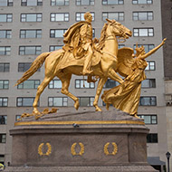
General William Tecumseh Sherman
Famous Civil War general known for his 1864 capture of Atlanta and subsequent March to the Sea, a turning point for the Union
During the taking of Atlanta in September 1864, General William Sherman ordered the burning of all government and military buildings. Many civilian residences were burned down in the process. In his march to Savannah he caused, by his own estimate, $100 million in property damage. During the war he refused to employ black soldiers in his army. In 1860 he wrote to his wife, “All the congresses on earth can’t make the negro anything else than what he is; he must be subject to the white man.” And he wrote, “Two such races cannot live in harmony save as master and slave.” But in 1865 he issued Special Field Orders No. 15, seizing land from white owners in South Carolina, Georgia and Florida to settle 40,000 freed slaves and black refugees. This was the basis of the phrase “40 acres and a mule” and it was revoked a year later by President Andrew Johnson, whose sympathies lay with the South. After the war he was assigned to the frontier and oversaw major Indian wars. He advocated eradicating the buffalo as a means to forcing the Indians to weaken the Indians. He died in NYC of pneumonia on Valentine’s Day 1891.
-
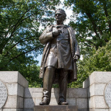
Dr. James Marion Sims
Famous Colonial-era doctor who founded the city’s first women’s hospital
Dr. James Sims' statue’s inscription states, “His brilliant achievement carried the fame of American surgery throughout the entire world.” Sims experimented on 12 female slaves (1845-1849) in Montgomery, Alabama who were suffering from a severe complication that obstructed childbirth. At first the surgery failed but in later efforts he was able to remedy the problem for four of the women. He later moved to New York where he performed the now perfected operation on white women.
-
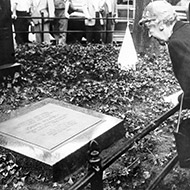
Joseph Pulitzer
Famous 19th Century newspaper publisher
Joseph Pulitzer purchased the New York World in 1883, which grew to be the nation’s biggest newspaper. During his late 19th century circulation battle with William Randolph Hearst, both publishers pushed for America’s entry into the Spanish American war of 1898 with dubious “fake news” about the sinking of the USS Maine in Havana Harbor. He and Hearst also invented yellow journalism.
-
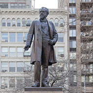
Roscoe Conkling
19th Century New York politician serving in both the U.S. House and Senate
An ardent Republican supporter of Reconstruction, Roscoe Conkling was also a political boss in New York. As such, he controlled patronage appointments at the U.S Customs House and opposed all efforts to impose civil service rules to eliminate rampant corruption. Appraisers at the Customs House received commissions based on their evaluation of the value of imported goods; the higher the value given, the higher the commission. During the Great Blizzard of 1888, he decided to walk from his law office near Wall Street to his home near Madison Square Park. He collapsed in the snow, caught pneumonia, and died a few weeks later.
-
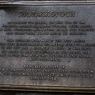
Shorakkopoch Rock
Commemorates the alleged spot where then director of New Netherlands Peter Minuit “purchased” Manhattan from the Mohawk and Lenape tribes for a trunk full of trinkets and beads “then worth about 60 guilders.”
-
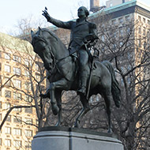
George Washington
Commanded Colonial forces to victory over the British during the Revolution, nation’s first president
Slave-owner until the day he died.
-
James Gordon Bennett
19th Century newspaper publisher, founder of New York Herald in 1835
In his editorials James Bennett opposed the election of Abraham Lincoln, railing against what he saw as the “inferiority” of blacks. In an 1859 editorial response following abolitionist John Brown’s unsuccessful raid on Harper’s Ferry to initiate a slave uprising, Bennett wrote, “The whole history of negro insurrections proves that there is no race of men so brutal and bloody-minded as the negro.”
-
Charles Lindbergh
A famous pilot who was first to cross the Atlantic in an airplane.
Vocal opponent of America’s intervention in the years preceding World War II, he warned of three groups pressing the country toward war: “the British, the Jewish and the Roosevelt Administration.” In his America First movement, he warned of “large Jewish ownership and influence in our motion pictures, our press, our radio and our government.”
Interactive by Joe Murphy and Steve Smirti